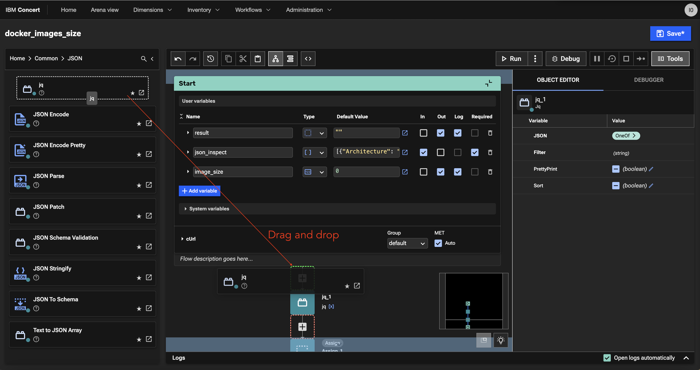
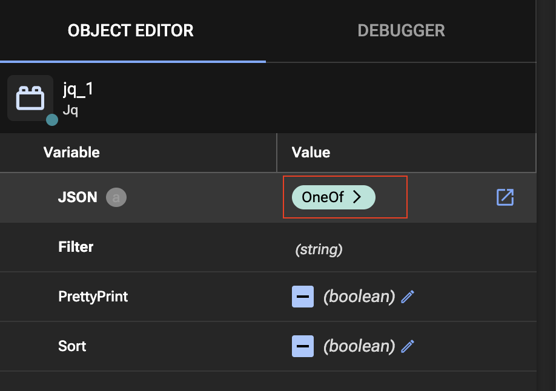
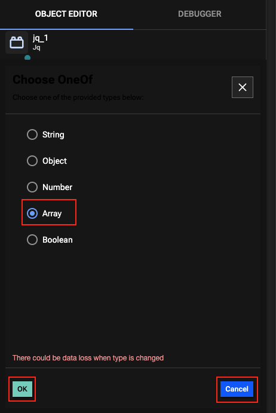
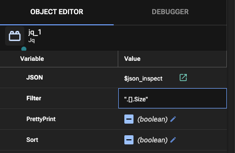
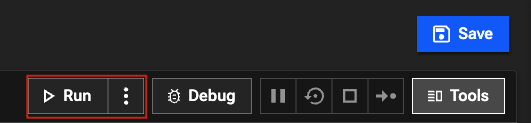

Managing Resilience¶
Objective¶
In order to use Resilience dimension, an organisation need to determine the non-functional requirements (NFRs) that apply to its applications, as well as the target values that must be achieved to meet contractual obligations or otherwise be considered resilient. Also, relevant data must be collected from the applications and their environment components in order to import them to Concert on a regular basis.
In this lab, you will use and create a concert workflow to ingest in IBM Concert resilience data concerning the quality of docker images.
We will use the 2 images that you have build in lab4.
Prerequisite¶
- IBM Concert must be installed
- Concert workflow must be installed
Content¶
- Managing Resilience
- Objective
- Prerequisite
- Content
- Activate the Resilience
- Import Resilience data using a workflow
- Resilience Management
Activate the Resilience¶
- From Concert UI, navigate to Administration->Settings
- Select Miscellaneous tab
- Enable resilience
{kind=link}
You must also enable resilience for your application:
- From Concert UI, navigate to Inventory->Applications
- Select your hr-application
- Select Settings tab
- In Resilience menu, enable resilience
{kind=link}
Import Resilience data using a workflow¶
Resilience library and a Resilience profile¶
For this lab, we will use part of a provided library called Container Build Integrity Library. These library NFRs are used to assess security, efficiency and maintainability of container image quality. We will calculate these metrics:
- Average image size
- Max image size
- Percentage of images with excessive layers
To discover this library, follow these steps
- From Concert UI, navigate to Dimensions->Resilience
- Select Libraries tab
- Click Container Build Integrity Library link
- Expand Image Layers and Image Size
And take a look at how the scores are calculated. The next steps consists in creating a workflow to get images metrics and upload an assessment in IBM Concert.
Import a resilience workflow¶
You will start to import a pre-defined workflow available here.
- From Concert UI, navigate to Workflows->Manage
- Click the Import button (top right of the window) and select the concert_v110_absolute_Resilience.zip workflow from your laptop
This workflow retrieves, from your concert VM, the hr-application images you have build in Lab4.
Then, for each images it will do a podman inspect command and calculate metrics based on the podman inspect command result
To be able to ssh your concert VM, you need to define an SSH Authentication:
- Navigate to Workflows->Authentications
- Click the Create authentication button (top right of the window)
- Call it dev-vm
- In Service, select SSH
-
Then enter these values:
-
Host: your Concert VM IP
- Port: 2223
- Username: itzuser
- RSA Private Key: the content of the pem file you download from your reservation page
{kind=link}
Build your own sub workflow¶
You will now create a workflow that will be used as a sub-worflow of docker_images_metrics workflow in order to define a new metric: the percentage of big images. The aim of this workflow is to extract the image size from a json object that have the format of the result of the podman inspect command
- From Concert UI, navigate to Workflows->Manage
- Navigate in Resilience folder
- Click the button Create workflow (top right of the window)
- Call it docker_images_size and click Create button
- Define your variables:
| Name | Type | Default Value | Selected box |
|---|---|---|---|
| json_inspect | Array | [{"Architecture": "amd64", "Os": "linux", "Size": 1378729490}] | in / required |
| image_size | Number | 0 | out / log |
Then you are going to use a "jq" node in order to extract the size from the json_inspect input variable:
- From the palette that is at the left pane of your window, navigate in Common->Json
-
Select the jq box and drag and drop it before the Assign_1 box 
-
From the Object Editor that is in the right pane of your window, click on OneOf> 
-
Select Array, Click OK and Click Cancel
 -
Then select the pencil to set the JSON variable that jq will use as input
-
Enter value: $json_inspect
- For the Filter variable put the value: ".[].Size" (don't forget the quotes) 
{kind=link}
{kind=link}
{kind=link}
{kind=link}
{kind=link}
You just need now to assign the result of the jq node in the image_size output variable of your flow
- Select the Assign node that is under the jq node
-
From the Object Editor that is in the right pane of your window, enter following values:
-
variable: $image_size
-
value: $jq_1.result
{kind=link}
You can now test your workflow:
-
Click the Run button 
-
At the bottom of your window, you should have the image size corresponding to the value of your json_inspect input variable displayed
{kind=link}
{kind=link}
Complete the resilience workflow previously imported¶
You are going to complete the empty branch in the main workflow in order to calculate images metrics
- From Concert UI, navigate to Workflows->Manage
- Navigate in Resilience folder
- Open the docker_images_metrics workflow
-
Scroll the Split_1 node where you will see an empty Branch-2
-
From the palette that is at the left pane of your window, navigate in User->Resilience
- Drag and drop the docker_image_size node (it is the sub-flow you just create before) in the empty branch
- Name the node get_image_size_flow
-
From the Object Editor that is in the right pane of your window, enter following values:
-
json_inspect: $ssh_inspect_image.result (the result of the node named ssh_inspect_image is the input of your sub-flow)
-
Then complete your branch as shown in following image
{kind=link}
TIPS: most common nodes can be added by clicking the + that are in the flow where you want to add your node.
{kind=link}
Run the workflow to populate you application resilience posture¶
Before running your flow, you need to modify the value of these variables:
| Name | Value |
|---|---|
| concert_host | The IP address of your Concert VM |
| concert_api_key | The API key of your concert installation (can be retrieved from your env.sh file create in lab1) |
Now, you can now run your flow.
The best to begin is to run it in debug mode and put a breakpoint for example on node Upload_to_concert and take a look at the value of your concert_data variable
{kind=link}
{kind=link}
You should see these values for concert_data variable:
{kind=link}
Then you can finish the flow by clicking the Resume debug button
{kind=link}
If the flow is successfull, you see that in the logs
{kind=link}
You can now navigate to Dimensions->Resilience and select the components_images_posture
Resilience Management¶
Walkthrough the uploaded assessment:
- Home page - Resilience dimension
- Resilience Dimension
- Select "component_images_posture"
- Open a change request on an assessment
- Select an assessment
- In assessment summary tab, Sort by Assessed score
- In Actions tab, sort by Assessed score
{kind=link}